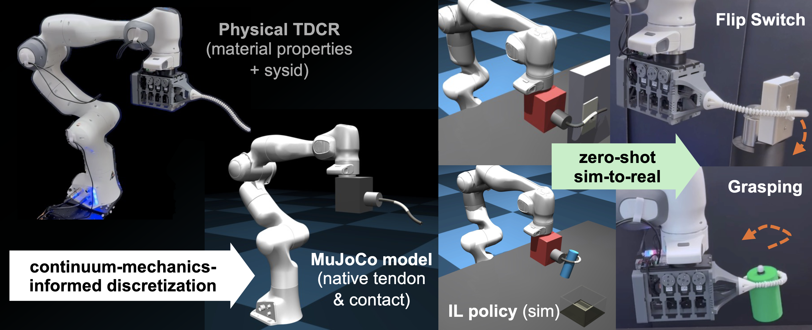
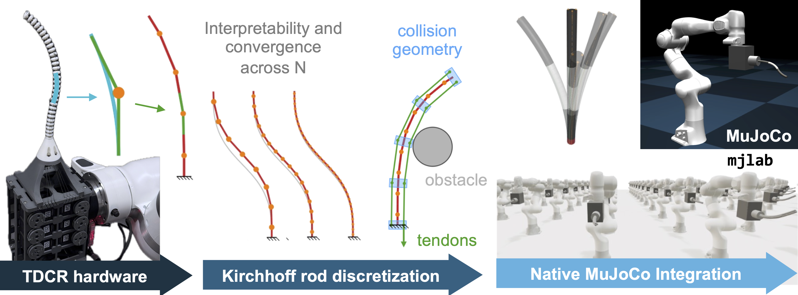
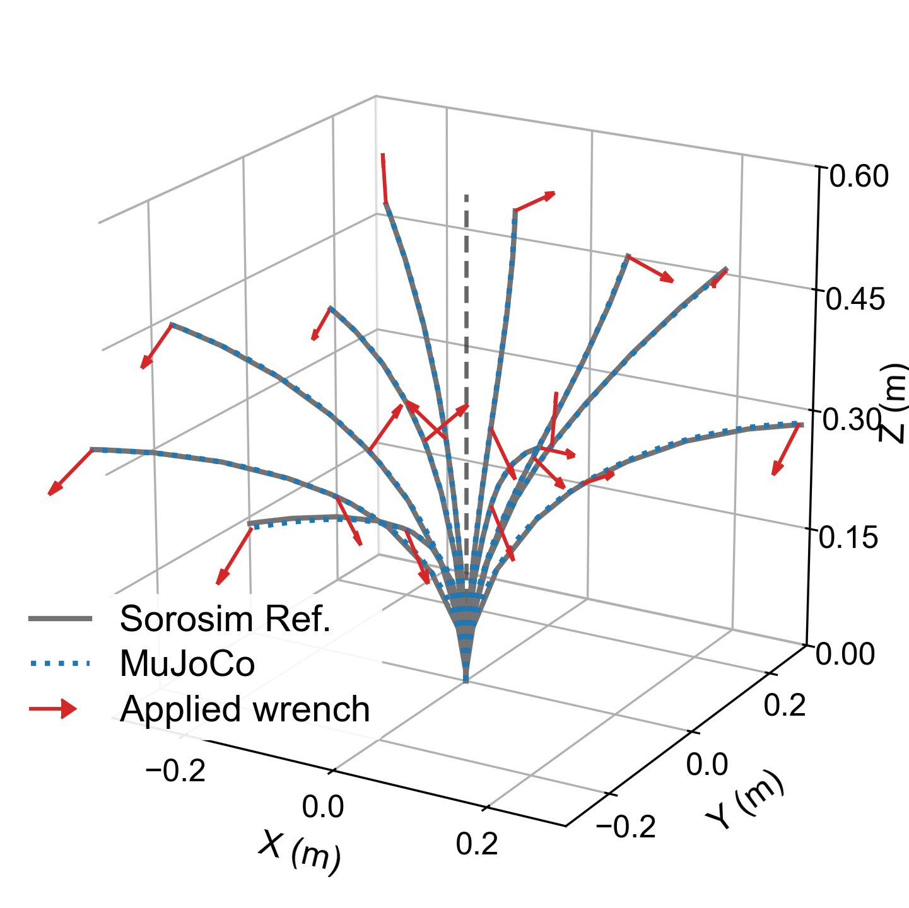
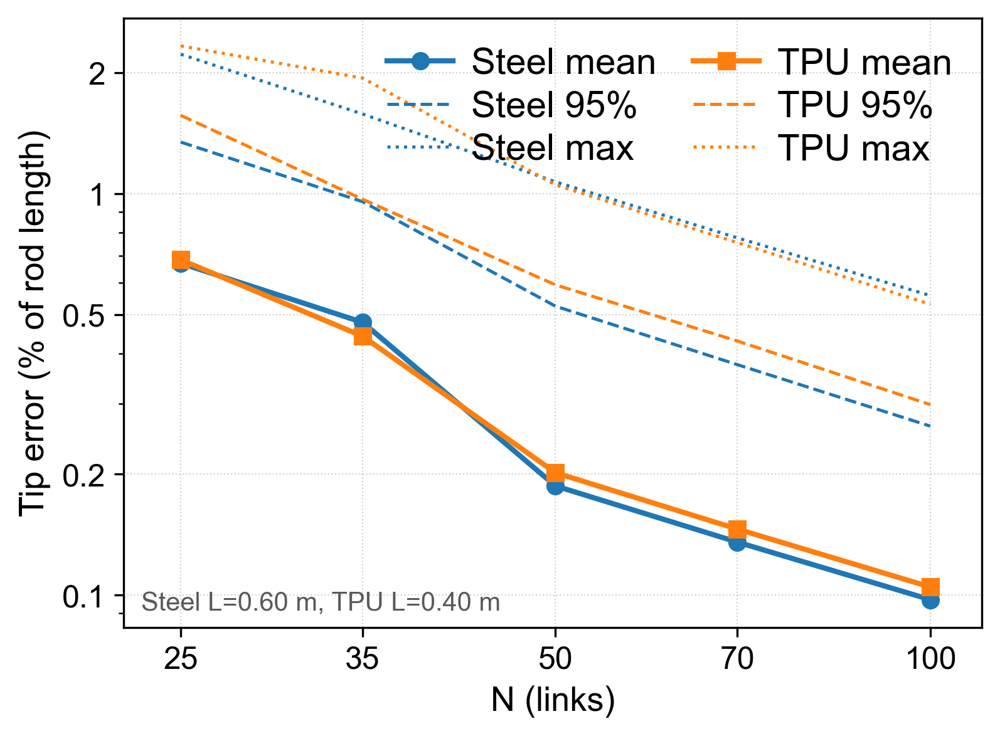
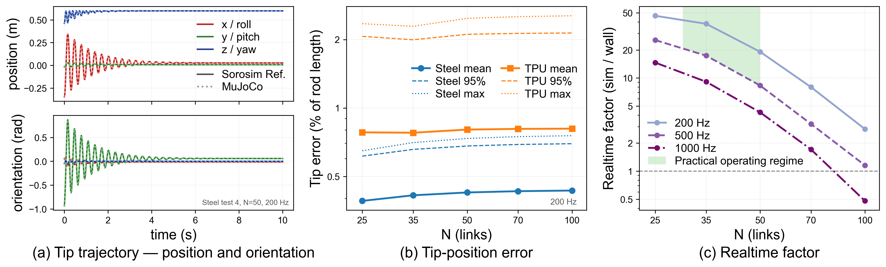

Do Rigid-Body Simulators Dream of Soft Robots?
Learning Contact-Rich Manipulation for
Tendon-Driven Continuum Robots
The right discretization lets continuum robots live natively inside MuJoCo.
Interactive Demo
Pick a configuration, then click the view and use the keys shown. This browser demo runs the MuJoCo model and teleoperation stack live using WebAssembly and Pyodide.
Loading demos…
Initializing…
Abstract
Learning contact-rich, whole-body manipulation for soft continuum robots is held back by the lack of simulation infrastructure that has accelerated rigid-robot manipulation. Existing soft robot simulators are physically grounded but lack the contact handling, actuation support, or learning integration needed for contact-rich manipulation; rigid-body approximations offer these capabilities but sacrifice physical grounding. We bridge this gap for tendon-driven continuum robots (TDCRs) by deriving a continuum-mechanics-informed discretization that places the soft robot natively inside MuJoCo, unifying tendon forces, body contact, and dynamics in a single physics pipeline. We validate the simulator against a Cosserat rod reference (static and dynamic) and real TDCR hardware. We then train state-based imitation learning policies via teleoperation in simulation and deploy them zero-shot to a physical 3-segment TDCR on a 7-DoF Franka arm across two contact-rich manipulation tasks. To our knowledge, this is the first demonstration of sim-to-real transfer for contact-rich manipulation with continuum robots.

Contributions
- Method. We derive a continuum-mechanics-informed rigid-link discretization that places TDCRs directly in MuJoCo while preserving actuation, contact, and dynamics in one physics pipeline, validated against Cosserat rod simulator and hardware.
- System. We build an open workflow around this discretization, including model generation, controllers, teleoperation, and zero-shot sim-to-real policy transfer for contact-rich manipulation.

Our continuum-informed discretization enables contact-rich zero-shot sim-to-real.
We collect demonstrations in simulation, train state-based imitation-learning policies, and deploy them zero-shot to the 3-segment TDCR on a Franka arm. Both clips are full, uncut rollouts at 1× speed.
Statics and dynamics stay faithful to a continuum-mechanics reference.
We compare our MuJoCo discretization against SoRoSim, a well-established Cosserat rod solver based on the geometric variable strain approach. The results show that the rigid-link TDCR accurately captures the static equilibria and tip-release dynamics of a continuum-mechanics model.


